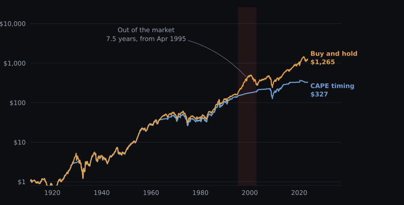
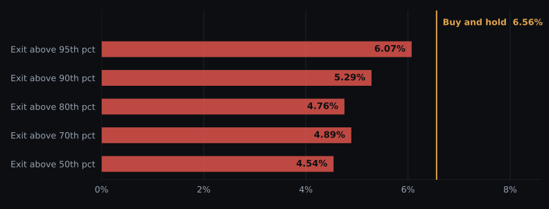
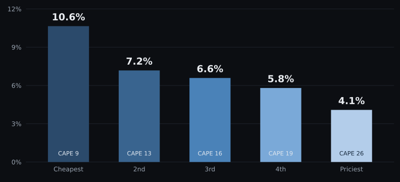

Valuation tells you what to expect. It does not tell you when to act.
Ask any chatbot, any finance podcast, or any commenter on X what a high CAPE ratio means, and you get some version of this: the market is historically expensive, so reduce your exposure.
It sounds reasonable. Buy low, sell high. I tested it, and the claim is wrong in a way that's more interesting than a simple no.
Data is Robert Shiller's S&P 500 dataset, monthly, January 1881 through June 2023. Returns are real total returns, so dividends reinvested and inflation stripped out. The cash leg earns the long term interest rate, also inflation adjusted.
The strategy: when CAPE sits above some percentile of its own history, sell stocks and hold cash. When it drops back below, buy back in.
The percentile threshold uses only CAPE data available at that moment, on an expanding window. You can't rank today's CAPE against a distribution containing 1999 if you're standing in 1975. The first thirty years are burned in so the percentile means something, and the signal is lagged a month so the rule trades on information it actually had.
Every switch pays ten basis points, which is generous for most of this history.

Every version loses, and not by a rounding error. The 90th percentile rule costs 1.27 percentage points a year over 142 years.

| Strategy | CAGR | Vol | Max drawdown | Trades | % in market |
|---|---|---|---|---|---|
| Buy and hold | 6.56% | 15.0% | −76.8% | 0 | 100% |
| Exit above 95th percentile | 6.07% | 14.0% | −68.3% | 25 | 86% |
| Exit above 90th percentile | 5.29% | 13.4% | −65.2% | 32 | 72% |
| Exit above 80th percentile | 4.76% | 12.9% | −65.2% | 34 | 61% |
| Exit above 70th percentile | 4.89% | 12.4% | −62.0% | 38 | 55% |
| Exit above 50th percentile | 4.54% | 11.5% | −58.7% | 34 | 46% |
I reran it at zero cost. Free trading, no slippage, no taxes, a world that doesn't exist. The 90th percentile rule still loses by 1.24 points a year. Softening it doesn't help either: lightening to 50% stocks instead of going fully to cash returns 5.99% against 6.56%, and barely moves the risk adjusted number. The signal itself is the problem.
April 1995. The signal said "too expensive" and kept you in cash for ninety consecutive months. You'd have sat out the entire back half of the nineties and bought back in around late 2002.
Nobody survives that psychologically. And this was the second best performing version of the strategy.
| Period | Buy and hold | CAPE timing | Difference |
|---|---|---|---|
| 1881 to 1950 | 4.82% | 4.77% | −0.05% |
| 1950 to 1990 | 7.77% | 7.41% | −0.36% |
| 1990 to 2023 | 7.16% | 3.39% | −3.77% |
No, and this is the part everyone gets backwards. CAPE is a bad timing signal and a good expectations signal. Same number, completely different job.

Buying at the cheapest quintile returned about 10.6% a year real over the next decade. Buying at the priciest returned about 4.1%. That gap is 6.5 points a year, compounded over ten years, and it's about as strong a relationship as this field offers.
Overlapping ten year windows badly overstate the evidence. Measured from 1980 the correlation reads −0.87, which looks conclusive until you notice that span holds roughly four independent decades. Four.
So I reran it on non overlapping windows, one observation per decade, no double counting. Since 1881: fourteen windows, correlation −0.49. Since 1950: seven windows, correlation −0.68. Weaker than the headline, still clearly there. That's the real result, and with seven independent observations in the modern era the next two decades could genuinely break it.
High CAPE means your next decade of returns will probably be worse than average. That's a genuinely useful thing to know. It should change your savings rate, your retirement math, and how much return you plan on. It's the difference between assuming 10% and assuming 4%, and over thirty years that assumption is the whole ballgame.
What it can't do is tell you when the expensive market stops going up. Expensive markets stay expensive for years. Sometimes seven and a half of them.
The mistake isn't believing CAPE works. It's confusing a forecast with a trigger.